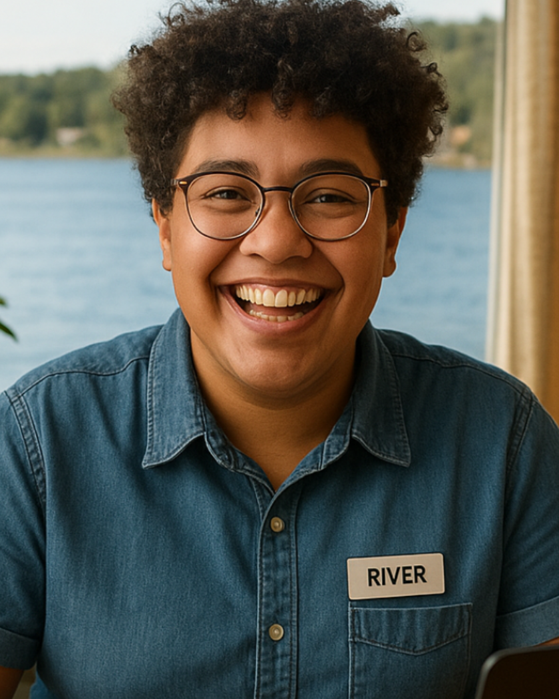
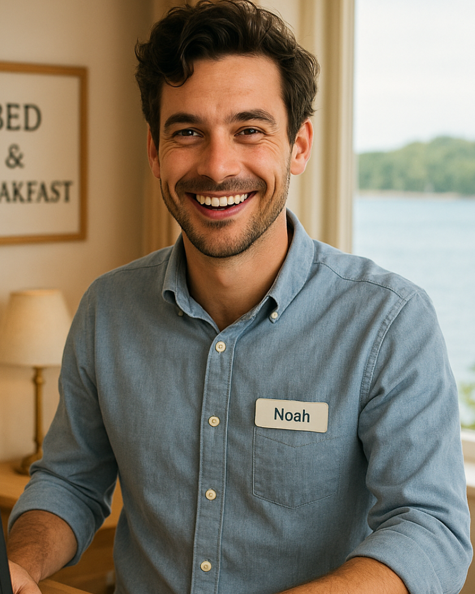
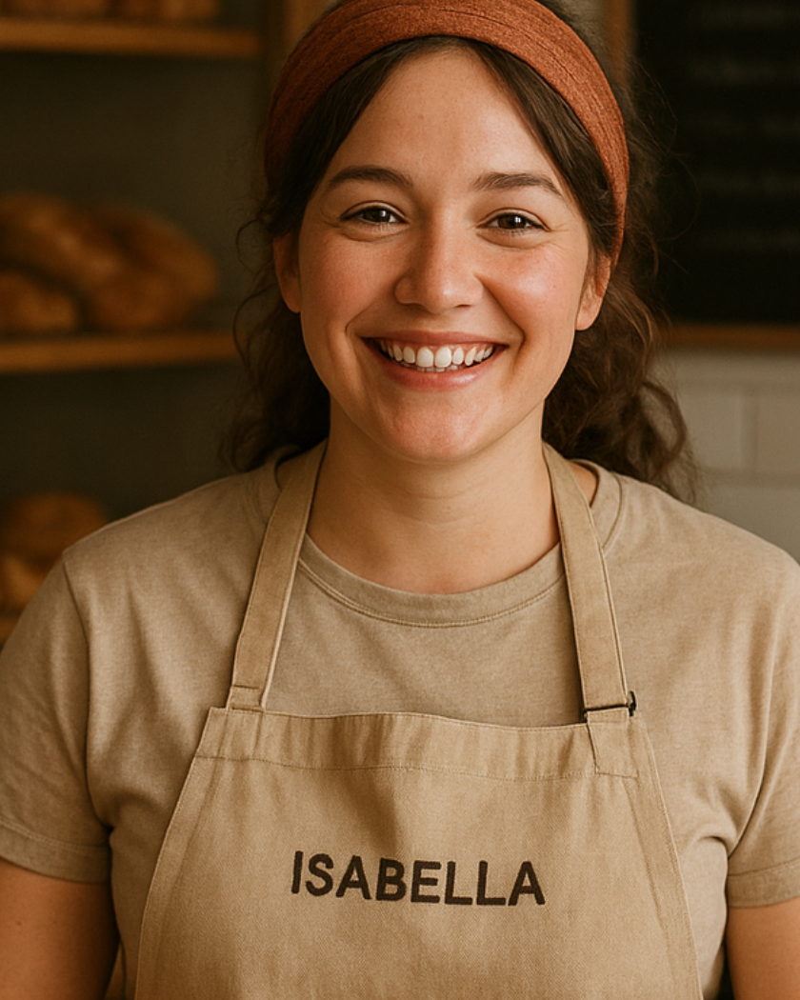
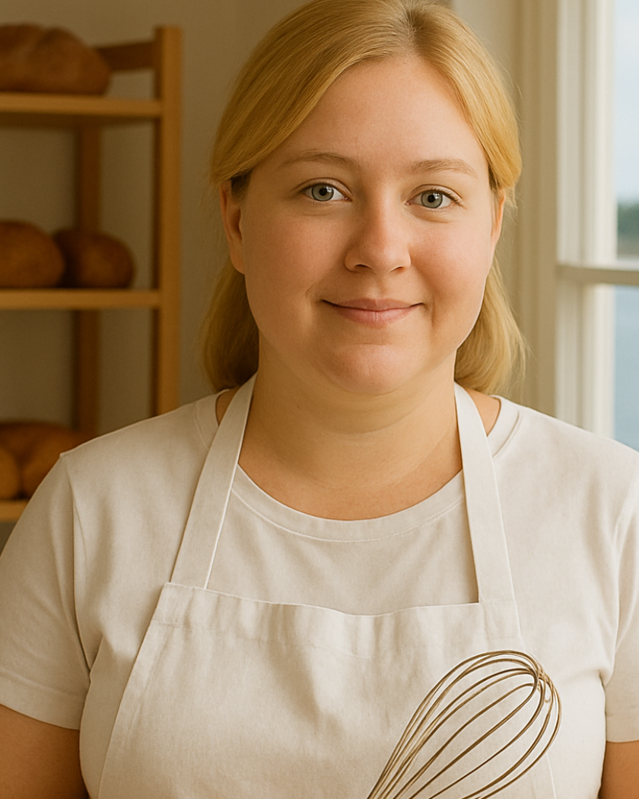
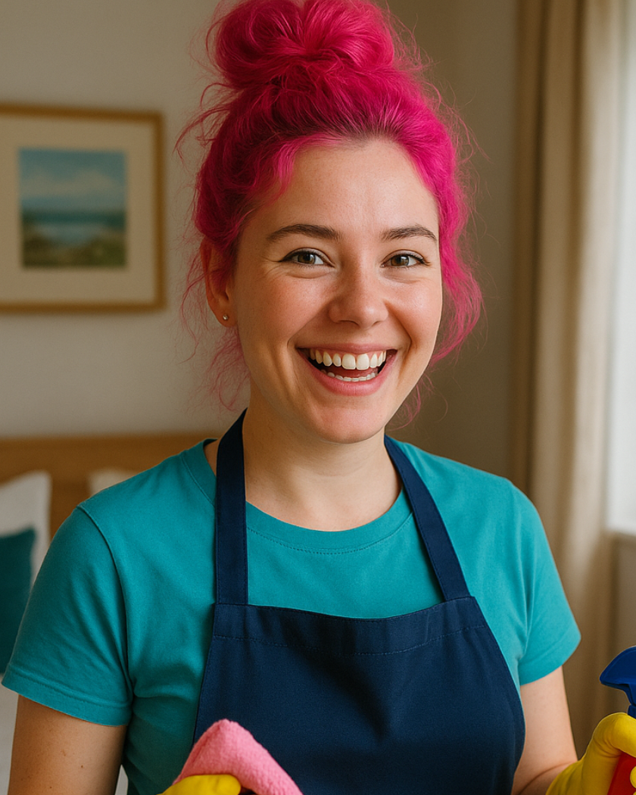
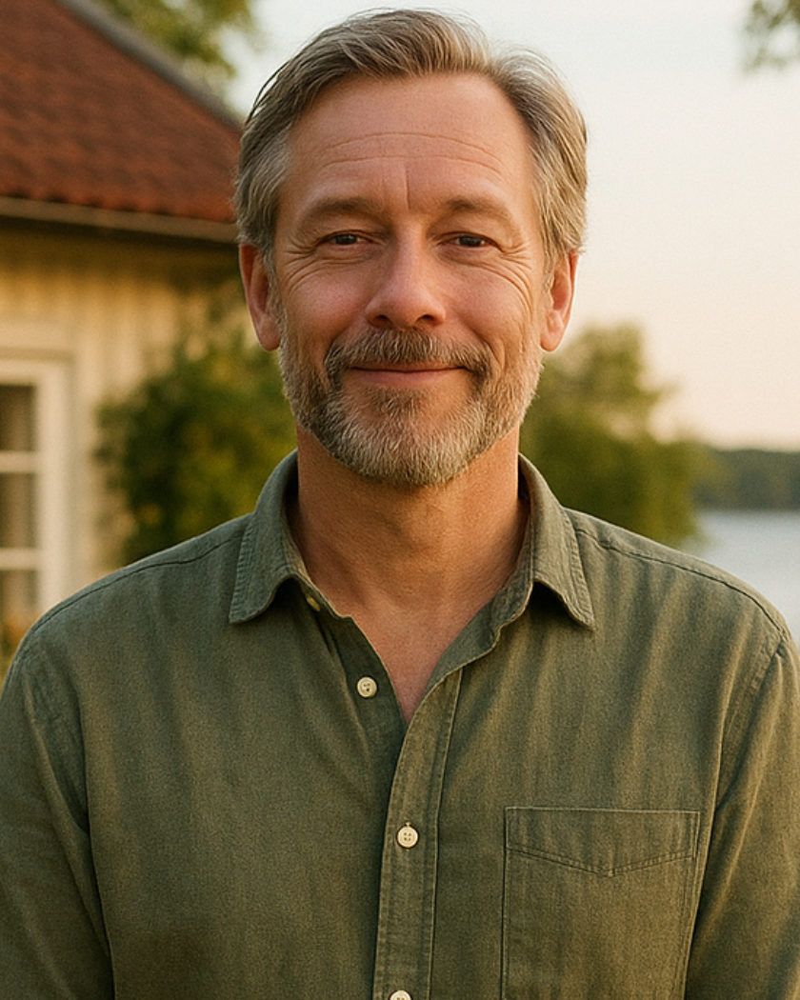

Havsvikens
historia
Det sägs att Havsviken föddes ur havets egen längtan efter sällskap. En gång i tiden stod här en liten fiskarstuga, byggd så nära vattnet att vågorna ibland knackade på tröskeln. En kvinna vid namn Ingalill bodde där, känd i trakten för sitt skratt som kunde höras ända ut till fyren. Hon bakade bröd som doftade havssalt och rosmarin, och varje resenär som gått vilse i dimman fick en plats vid hennes köksbord.
Med åren växte stugan, som om den själv ville rymma fler historier. Gäster började återvända, inte bara för utsikten över det glittrande vattnet, utan även för känslan av att tiden stannade när man steg in genom dörren.
Så föddes Havsviken Bed & Breakfast – ett hus där vinden viskar genom snäckorna i fönstren, där teet alltid smakar lite bättre efter en promenad längs stranden, och där varje gäst blir en del av sagan som fortsätter att berättas, kväll efter kväll, vid havets kant.
stora minnen ❞
Familjen på Havsviken
River Amari-Solberg
Receptionist
river.amari-solberg@havsviken.se
River är en nyfiken själ som älskar att höra gästernas livshistorier och alltid hittar något att skratta åt.
Noah Lindqvist
Receptionist
noah.lindqvist@havsviken.se
Noah sprider lugn energi och har en smittande förmåga att få människor att slappna av och känna sig välkomna.
Isabella Nguyen
Frukostbiträde & Bagare
isabella.nguyen@havsviken.se
Isabella är kreativ, varm och alltid på jakt efter nya sätt att skapa gemenskap och glädje omkring sig.
Elinora Dalh
Frukostbiträde & Konditor
, elinora.dalh@havsviken.se
Elinora är omtänksam och lite av en drömmare, ofta med en ny idé eller recept på gång.
Maja Torres
Städerska & Husmor
maja.torres@havsviken.se
Maja är energisk och full av liv, med en förmåga att vända även en grå dag till något roligt.
Gabriel Andersson
Fastighet & Trädgård
gabriel.andersson@havsviken.se
Gabriel är den trygga typen som alla vänder sig till när något behöver lösas med lugn och humor.
Josef & Emil Bäcklund